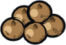
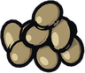
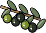

Soleira
Levels 20-32. Monsters are level 20 where you come in and grow stronger the further you go; see Levels.
Soleira is the warm south, inspired by Spain and Portugal. Its towns have lime-washed walls, barrel-tiled roofs, shady courtyards, arcades and flower-hung balconies. The country is dry and golden, with olive groves, orange orchards, saffron fields, vineyards and cork oaks, and windmills on the ridges.
The capital, Castamar, is a city of nine maps around its cathedral and fortress gate. Corcova and Alvarena are hill towns, Puerto Dorado is the harbour, and Los Molinos is the village of the windmills. Further out are a hermitage in the hills and the Cuelebre's Hollow, lair of the winged serpent of the Sierra.
Walk south from the Drowned Chapel in the Fenmire to get there, or take a ship.
Places
240 maps and 29 rooms. Named places:
- Fenmire Crossing
- Cuelebre's Hollow
- Hermitage of San Ramon
- Corcova Cork Yards
- Corcova
- Castamar North Ward
- Castamar Alcazaba
- Castamar Old Gate
- Castamar Market
- Castamar Plaza Mayor
- Castamar Cathedral Square
- Castamar Gardens
- Castamar South Gate
- Castamar Potters' Row
- Los Molinos
- Alvarena
- Alvarena Chapel
- Saffron Fields
- Puerto Dorado Quay
- Puerto Dorado
- Puerto Dorado Beach
Creatures
| Creature | Levels | Placed | Tameable |
|---|---|---|---|
| Vulture | 20-32 | 91 | yes |
| Wild Bull | 21-30 | 80 | yes |
| Iberian Lynx | 20-32 | 68 | yes |
| Pig | 20-30 | 58 | yes |
| Wolf | 20-32 | 49 | yes |
| Ogre | 25-29 | 5 | yes |
People
- Apothecary Gonzalo
- Apothecary Leonora
- Armourer Fermin
- Armourer Urraca
- Border Warden Ines
- Brother Anselm
- Brother Julian
- Captain Soledad
- Coachman Felix
- Coachman Paco
- Coachwoman Lucia
- Cook Mercedes
- Corkcutter Mateo
- Duchess Leonor
- Farmer Dolores
- Father Tomas
- Fisher Lalo
- Fishwife Marisa
- Flower Seller Rocio
- Fruit Seller Carmen
- Gardener Rosario
- Glover Ines
- Goodwife Remedios
- Grocer Beatriz
- Grocer Bermudo
- Grocer Elvira
- Grocer Sancho
- Guard Alonso
- Guard Beatriz
- Guard Diego
- Guard Esteban
- Guard Rodrigo
- Harbourmaster Nuno
- Hermit Ramon
- Innkeeper Rafaela
- Mayor Encarna
- Merchant Baltasar
- Merchant Isidro
- Miller Anselmo
- Orange Seller Paqui
- Potter Joaquin
- Sacristan Elena
- Sister Amparo
- Smith Herrera
- Toolmaker Alvaro
- Toolmaker Nicolas
- Toolmaker Tello
- Town Crier Ramon
- Townsman Ignacio
- Weaponsmith Lorenzo
- Weaponsmith Martin
- Weaponsmith Rodrigo
- Weaver Pilar
Quests
| Quest | From | Summary |
|---|---|---|
| Daily: Vulture Watch | Guard Diego | Vultures harry the caravans on the southern road. |
| Bulls on the Road | Duchess Leonor | Drive off 4 Wild Bulls from the dehesa road. |
| The Ninth Summer | Merchant Baltasar | Strip 6 Cork from the cork oaks around Corcova. |
| The Winged Serpent | Duchess Leonor | Slay the Cuelebre in its hollow in the sierra. |
| The Big One | Fisher Lalo | Fisher Lalo wants proof the sea still gives. |
| Eyes in the Cork Woods | Guard Rodrigo | Drive off 3 Iberian Lynx from the woods around Corcova. |
| Into the Sun | Border Warden Ines | Find Duchess Leonor in the Alcazaba of Castamar. |
| Red Gold | Father Tomas | Bring Father Tomas 3 Saffron for the cathedral's feast day. |
| The Northern Route | Captain Soledad | Sail to Port Saltreach and speak with Harbourmaster Quill. |
| The Hermit's Vigil | Hermit Ramon | Hermit Ramon keeps a vigil for a lost pilgrim. Find her, and decide what to tell him. |
| Shadows over Alvarena | Mayor Encarna | Drive off 4 Vultures from the golden hills. |
| Hides for the Looms | Weaver Pilar | Weaver Pilar needs bull hide for her leatherwork. |
Farming
| Seed | Farming level | Harvest |
|---|---|---|
 Saffron Seeds | 40 | Saffron |
 Olive Seeds | 25 |  Olives |
| Orange Seeds | 18 | |
| Grape Seeds | 28 | Grapes |
Regional recipes
| Makes | Skill | Station | From |
|---|---|---|---|
| Cooking 25 | Stove or Campfire | 3 × Olives, 1 × | |
| Cooking 45 | Stove or Campfire | 1 × Saffron, 2 × | |
| Cooking 30 | Stove or Campfire | 2 × | |
| Soleira Wine | Cooking 32 | Stove or Campfire | 3 × Grapes, 1 × |
Festivals
- Night of Fires, 23 June to 24 June: Cooking improves twice as often.
- Midsummer Fair, 18 June to 2 July: rare monsters appear twice as often.
Deeds and feats
Deeds of Soleira
- Novice: Finish Into the Sun, Reach Castamar, Reach Alvarena, Defeat 3 Wild Bulls. Reward: 5 ×
 Oranges, 2 ×
Oranges, 2 ×  Paella.
Paella. - Adept: Finish The Ninth Summer, Reach Puerto Dorado, Harvest Saffron, Press Olive Oil. Reward: 3 ×
 Olive Oil,
Olive Oil,  Steel Shield.
Steel Shield. - Master: Slay the Cuelebre, Finish The Winged Serpent, Cook a Paella, Tame 3 beasts. Reward:
 Pharaoh Shield,
Pharaoh Shield,  Gold Boots; title "of the Sun".
Gold Boots; title "of the Sun".
- Serpentslayer: Slay the Cuelebre 3 times; title "Serpentslayer".
- Bull Runner: Defeat 50 Wild Bulls; title "the Bull Runner".
Travel
| From | Ask | To | By | Fare |
|---|---|---|---|---|
| Puerto Dorado | Captain Soledad | Port Saltreach | ship | 50 gold |
| Port Saltreach | Captain Morwen | Puerto Dorado | ship | 50 gold |
| Corcova | Coachman Paco | Castamar | coach | 20 gold |
| Castamar Plaza Mayor | Coachwoman Lucia | Corcova | coach | 20 gold |
| Castamar Plaza Mayor | Coachwoman Lucia | Alvarena | coach | 20 gold |
| Castamar Plaza Mayor | Coachwoman Lucia | Puerto Dorado | coach | 25 gold |
| Alvarena | Coachman Felix | Castamar | coach | 20 gold |